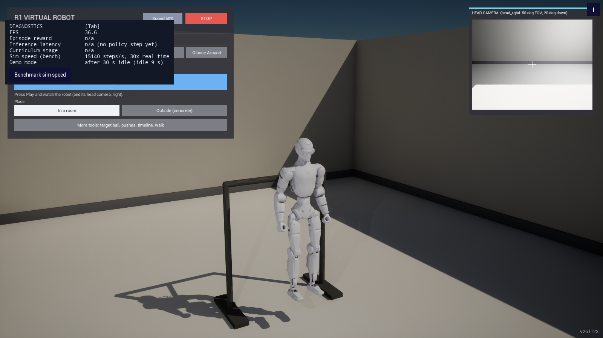
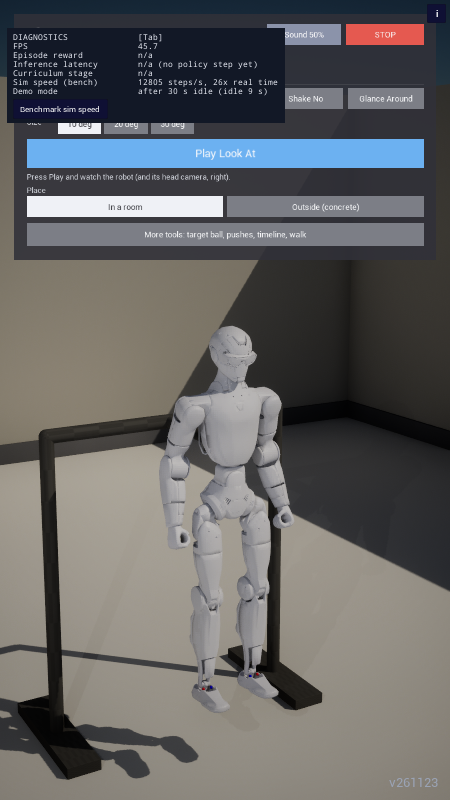
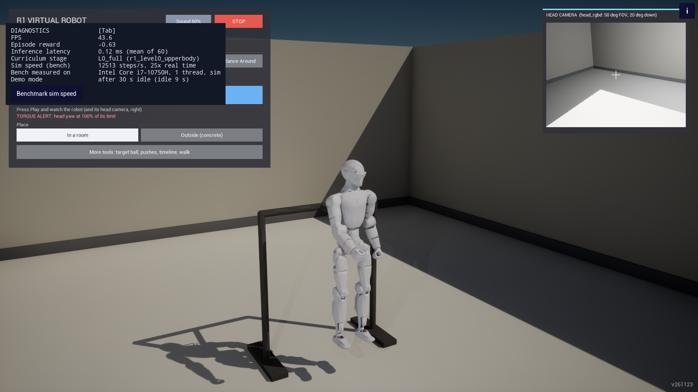
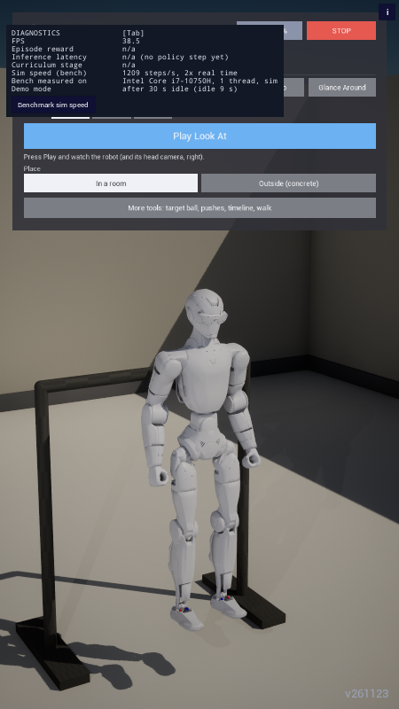
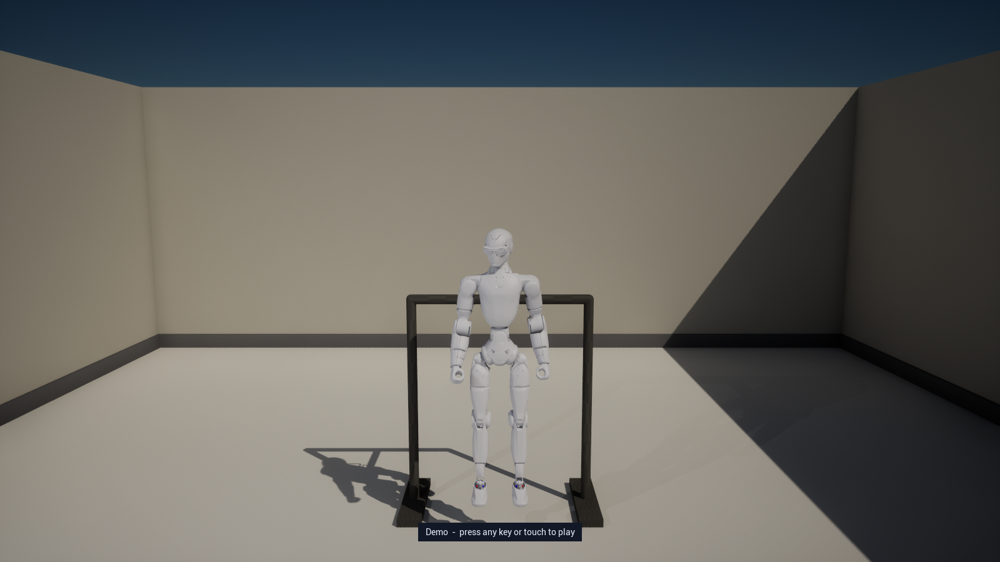
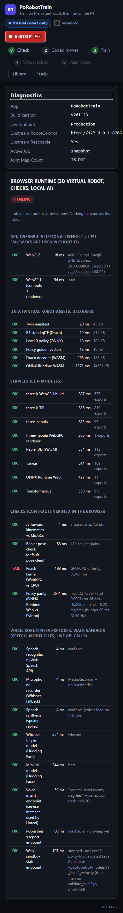

v4 audit: overlay labels, idle clock, /diag pill
2026-11-23. Unreal: R1TwinEditor Development, -game -ShowcaseCapture -ShowcaseTouch -ShowcaseBench at
1600×900 and 450×800 on an i7-10750H / RTX 2060 laptop. The five HUD anchors of the scenario lab panel (Brain, Target,
Disturb, STOP, Details; R1BehaviourPanel.h) are unchanged: only the Tab overlay gained one row.
Unreal Tab overlay: before


Unreal Tab overlay: after

bRunLevel0PolicyOnPlay=True, simulation only): reward, NNE latency 0.12 ms, curriculum stage, and the new Bench measured on row (CPU, one thread, simulation; never the robot). Log: R1Policy perf: 242 steps in 5.01 s (48.3 Hz), NNE inference avg 0.120 ms.

R1Twin.Showcase.IdleClockIgnoresLongFrames passes.Blazor /diag
